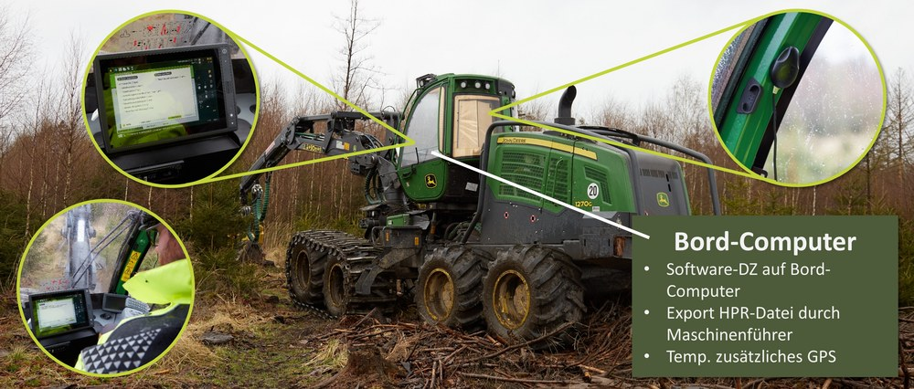
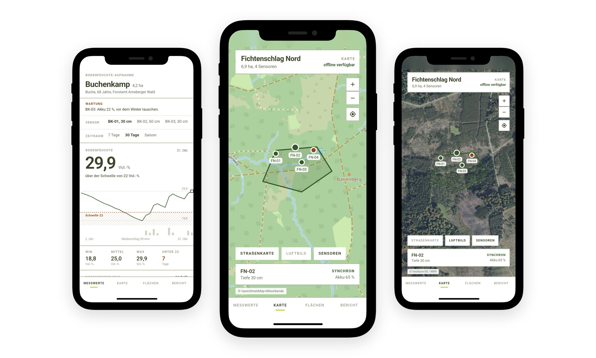
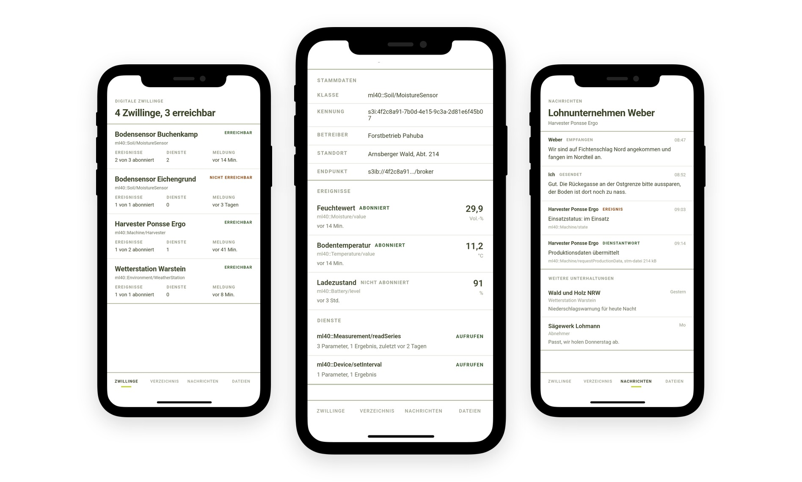
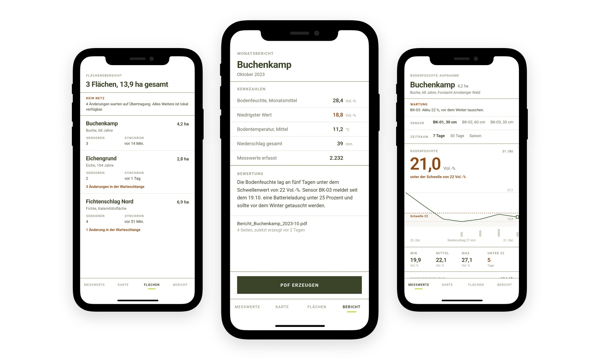

About
Wald und Holz 4.0 is a competence centre at the RIF Institut für Forschung und Transfer in Dortmund that takes Industry 4.0 into forestry. I have been a working student there since January 2022, alongside my applied computer science degree at TU Dortmund.
Across two publicly funded research projects, EFRE-0802077 and EFRE-0801991, I worked on the client side: two cross-platform applications in Flutter and the Python that feeds them. That covered the screens a forester sees, the local store that keeps them working without a signal, the login against the platform's identity provider, and the message handling that carries sensor events and service replies into the interface. The sensors, the water balance model and the platform services themselves were other people's work.
Stack
- Flutter
- Dart
- Riverpod
- Hive
- Navigator 2.0
- OAuth 2.0
- Firebase Messaging
- flutter_map
- WMS
- GeoServer
- Python
- NumPy
- Plotly Dash
Digital Twins
Every sensor, machine and person in the network is a twin: registered in a shared directory, publishing events, offering services, exchanging messages over a broker. The applications hold no knowledge of any single service. They read what a twin declares and build the interface from it, so a service added on the other side works without a release.

Soil Condition Map
Will an unpaved skid trail carry a harvester today? An operator answers that from experience and from the weather of the past few days, and a wrong call costs money on the spot and compacts the soil for years. A network of soil moisture sensors feeds a water balance model, and the model publishes one map layer per day. The application draws that over OpenStreetMap with an opacity slider, three layers to switch between, and a date picker holding only the days that exist. It learns those days from the map server's capabilities document rather than a list shipped in the build.

Twin Companion Application
A few hectares of woodland usually involve an owner who visits a handful of times a year, a forest association acting for them, a contractor with the machines, and a public body paying part of the bill. Each of them holds a fragment of the same picture. The owner searches the directory, takes the twins they care about into their own view, and subscribes to their events one at a time. Service requests are generated from the parameters a twin declares. The messenger runs over the same broker as everything else, so machine events and human messages land in one thread. Offline is the normal case, not the exception.

Data Pipeline
Sensor exports arrive as CSV with gaps, duplicate timestamps and the occasional value that is a fault rather than a measurement, and researchers were cleaning them by hand in spreadsheets. The pipeline normalises timestamps, collapses duplicates, marks gaps rather than interpolating them, and flags outliers rather than deleting them. Statistics run on NumPy, and the output is an interactive dashboard, so a researcher picks their own plot and range instead of asking me for another slice.

Why There Is No Link
Research work under an NDA, so there is no public repository and no live deployment.